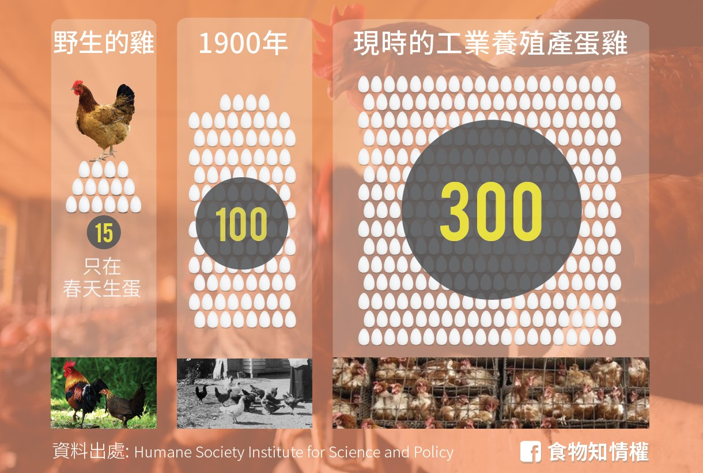
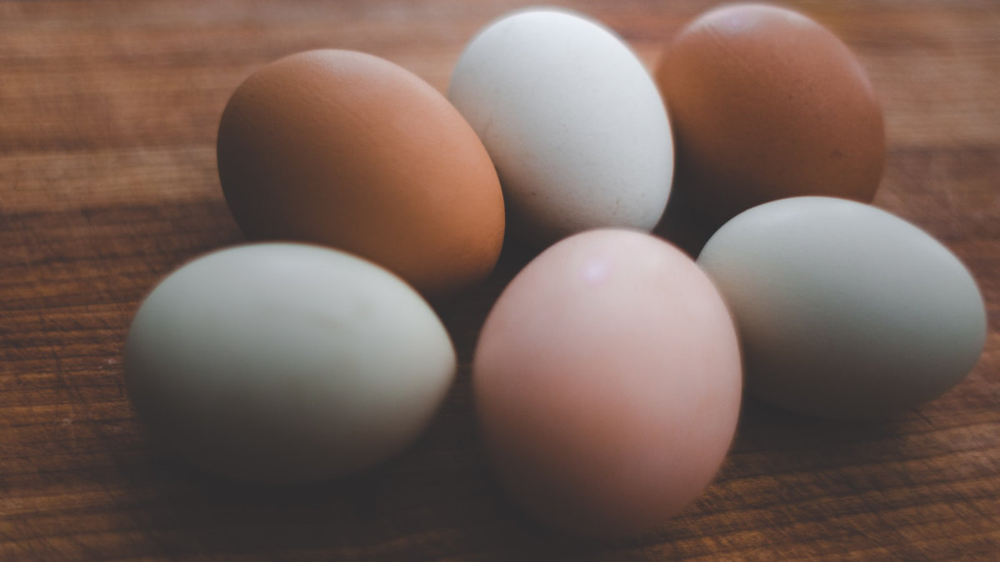
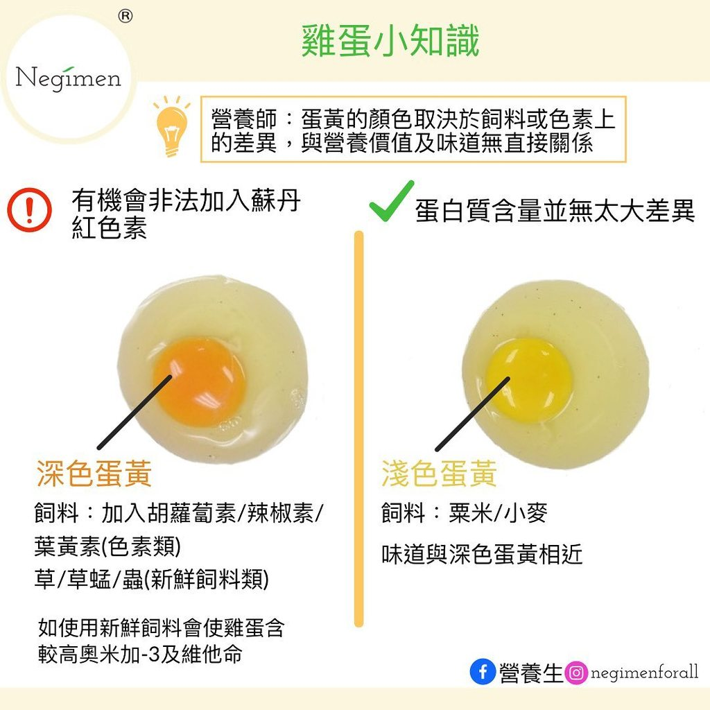
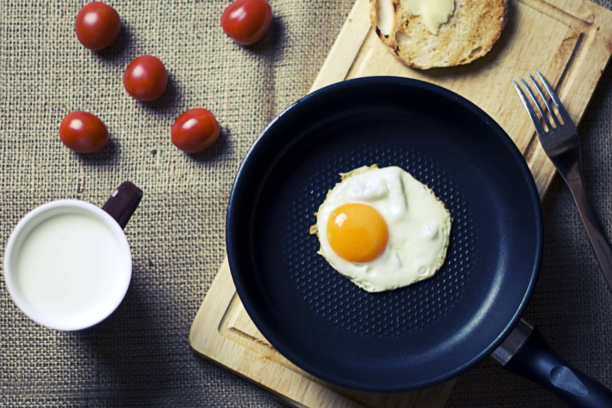
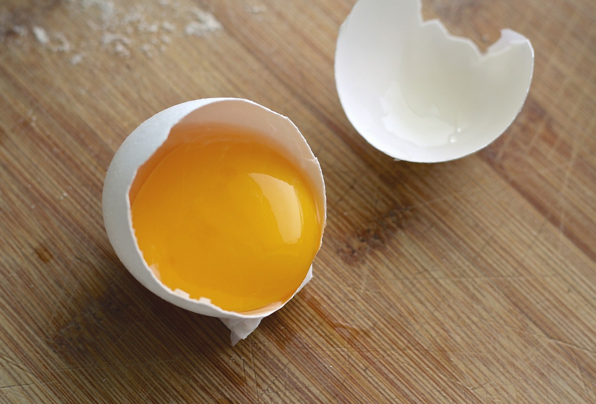

關於雞蛋的5個小知識
分類小知識
類別 : 關於雞蛋的小知識
一隻母雞一年可以生多少顆蛋?
母雞產生一顆雞蛋的周期通常是在24–26個小時，當母雞生下蛋後，正常在30鐘之內會進入到下一個產蛋的週期。
蛋殼的顏色
蛋殼的顏色通常與雞蛋的味道或者是營養價值無關。 棕色、白色、藍色、或者是綠色的蛋殼取決於母雞的品種。
蛋黃的顏色和營養價值無關
雞蛋的蛋黃顏色，是由母雞攝取的食物決定的，所以有些人會餵食金盞花或是菊花讓蛋黃的顏色更飽滿好看。
生吃雞蛋沒有更營養
生吃雞蛋並不會幫助你增加肌肉，吃生雞蛋僅有51%的蛋白質能被人體吸收，然而煮熟雞蛋有高達91%的蛋白質可以被人體吸收。
蛋白變稀了?!
看到有如雲朵般立體又濃稠的蛋白可以表示這是非常新鮮的雞蛋，然而蛋白呈稀狀是不新鮮的蛋，這是因為新鮮蛋白含有二氧化碳還沒有時間從蛋白釋出，然而不新鮮的蛋白因為二氧化碳的流失蛋白呈現稀水狀。
